|
Souhaiel BenSalem I’m a Deep Learning Research Engineer at Parrot Drones in Paris, specializing in Vision for Robotics. My work involves developing depth estimation algorithms for obstacle avoidance, theoretical and empirical studies on neural networks,
and exploring domain adaptation and generalization to improve model robustness. Before that, I also spent time at Inria Lyon's CHROMA as a Research Intern, working with Jilles Dibangoye on establishing theoretical foundations to near-optimally solving Dec-POMDPs under hierarchical information sharing. I have received an MSc. degree in Mathematics, Vision, Learning from ENS Paris Saclay, an MSC. degree in Mobile Autonomous Robotic Systems from Grenoble-INP and an Engineering degree in Robotics and Mechatronics from the the University of Carthage. |
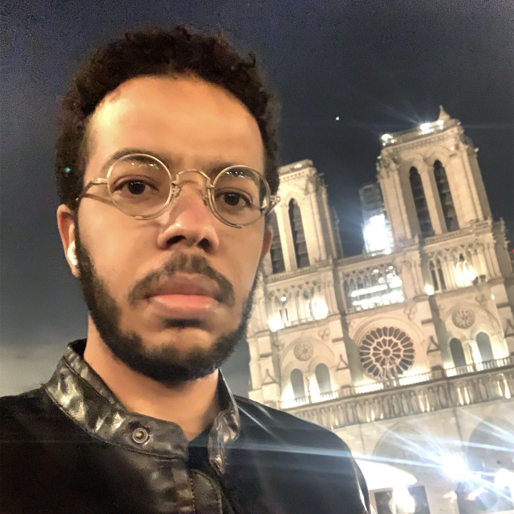 |
{kind=link}
Research InterestsMy research interests lie at the intersection of visual cognition, learning theory (self-supervised and unsupervised paradigms), and representation learning. I am particularly interested in the role of vision within the action-perception loop, where it drives learning and decision-making processes in complex, visually-rich environments and how to develop (predictive) models to learn abstract, hierarchical representations that enable robust and intuitive interactions of agents / robots in these environments. |
Research & Industry Experience
Parrot Drones, Paris, France (Apr. 2024 - Present)
Working within the Deep Learning and Computer Vision team to develop algorithms and train models for depth estimation, image denoising, and obstacle avoidance.
Inria Paris & Valeo.ai (May 2023 - Oct. 2023)
Data-efficient, language-driven 3D scene understanding by transferring knowledge from 2D Vision-Language Models (VLMs) and Vision-Foundation Models (VFMs) to 3D networks.
Under the supervision of Raoul de Charette, Renaud Marlet, Gilles Puy, and Alexandre Boulch.
Inria Lyon, CHROMA Team (Mar. 2022 - Aug. 2022)
Multi-agent Reinforcement Learning for Dec-POMDPs under hierarchical information sharing.
Under the supervision of Jilles Dibangoye.
STMicroelectronics, Tunis, Tunisia (Mar. 2021 - Sept. 2021)
Designed and developed an open HW/SW robotic architecture for STM32 didactic purposes, including motherboards, sensor drivers, and tutorials for teaching.
STMicroelectronics, Tunis, Tunisia (July 2020 - Sept. 2020)
Developed software tools for MCU/sensor communication, obstacle avoidance, line following, maze solving, and wireless control for a mobile robot.
Academic ProjectsThe following are some selected academic and personal projects. More are available on my GitHub. |
|
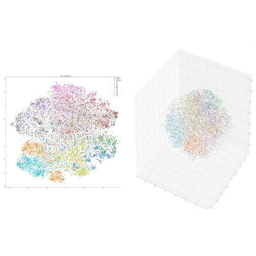
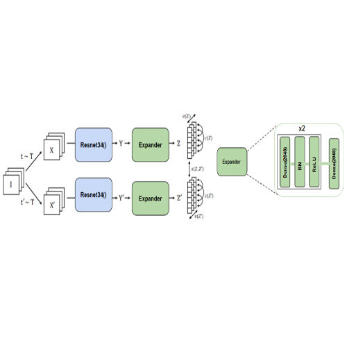
|
Self-Supervised Learning of Visual Representations
Souhaiel BenSalem Academic Project code / report Evaluated the VICReg method on smaller datasets, pretrained a visual backbone, and extended the evaluation of an ImageNet-pretrained model to new downstream tasks. |
|
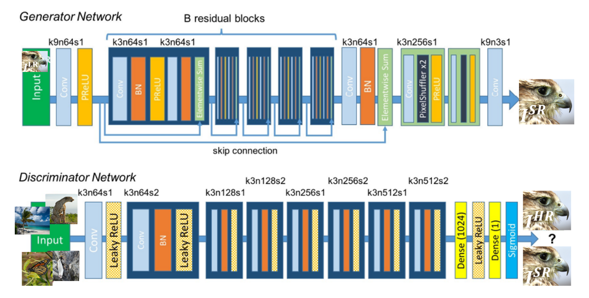
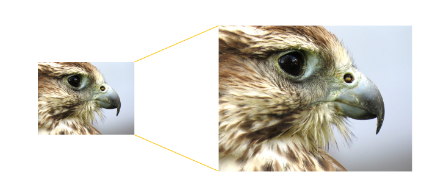
|
GAN-Based Photo Realistic Single Image Super Resolution
Souhaiel BenSalem Academic Project code / report / slides Tackled the DIV2K dataset using SRGAN, ESRGAN, and SRResNet methods. Proposed a novel perceptual loss function and evaluated performances for different loss functions. |
|
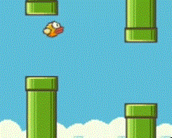
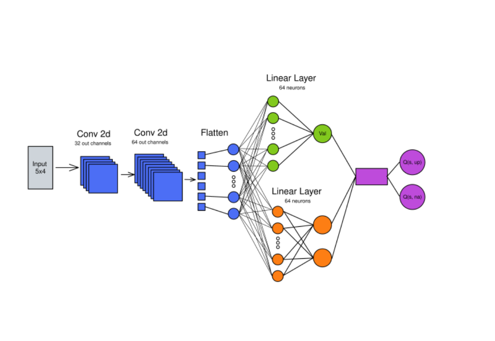
|
Deep Reinforcement Learning for Flappy Bird
Souhaiel BenSalem, Charbel ABI HANA, Adrian GARNIER, Israfel SALAZAR Academic Project code / report Implemented and compared various reinforcement learning algorithms (PPO, A2C, DQN) to solve the Flappy Bird game. Achieved optimal performance using Dueling Double DQN, outperforming baseline models with improved convergence and reward stability. |
|
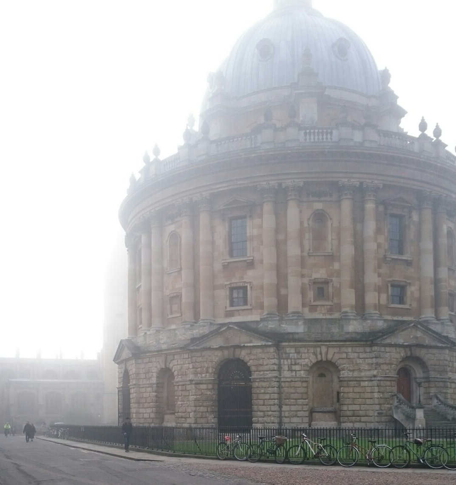
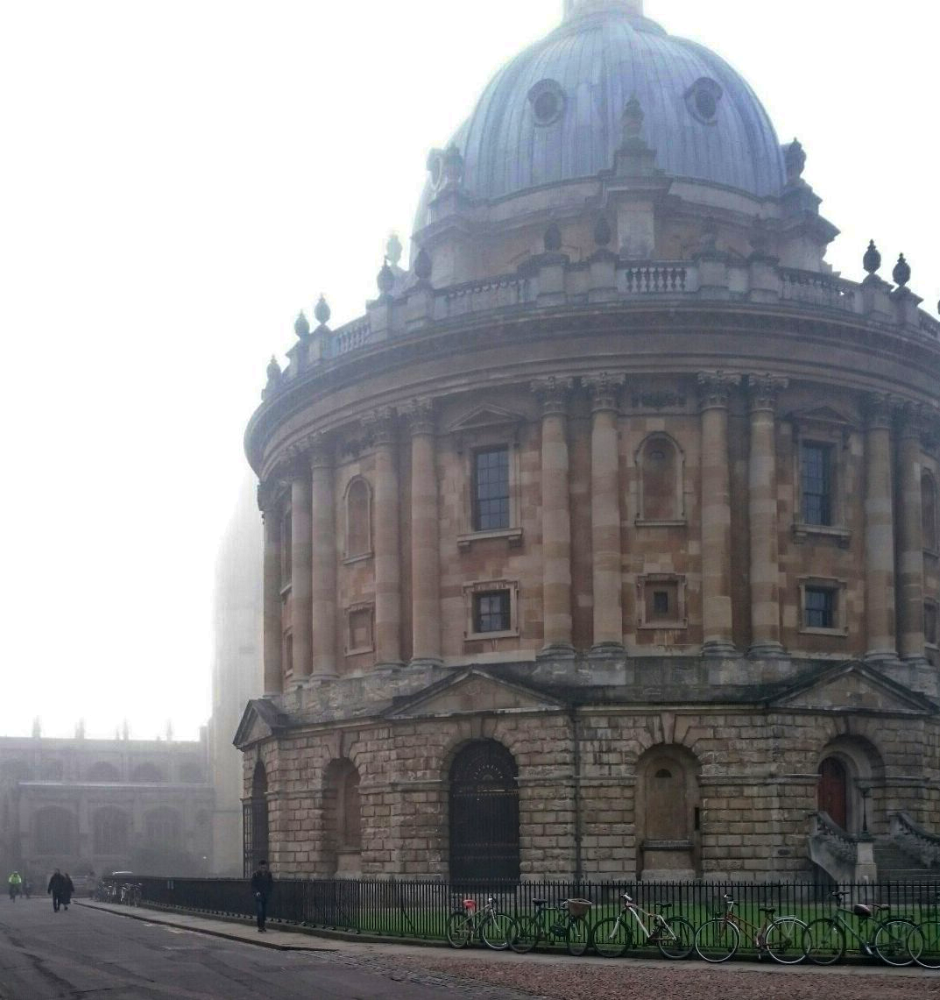
|
Image Dehazing with Boundary Constraint and Contextual Regularization
Souhaiel BenSalem Academic Project code / slides Attempted to recreate DXO's ClearView Plus technology. Studied, implemented, and adapted the image dehazing technique introduced by Meng et al. |
| 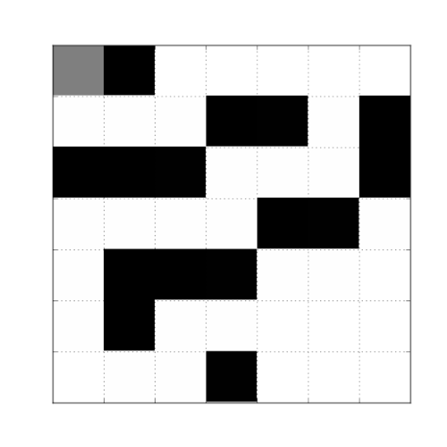 |
(Deep) Reinforcement Learning for Maze Rider
Souhaiel BenSalem, Hongyu Zhou, Shiyao Li Academic Project code / report Implemented and compared model-free reinforcement learning (Q-Learning, SARSA, Dyna-Q) and deep RL algorithms (DQN, REINFORCE, A2C) to solve the Maze Rider problem. Used reward shaping, efficient sampling, and state space reductions to improve convergence and performance. |
|
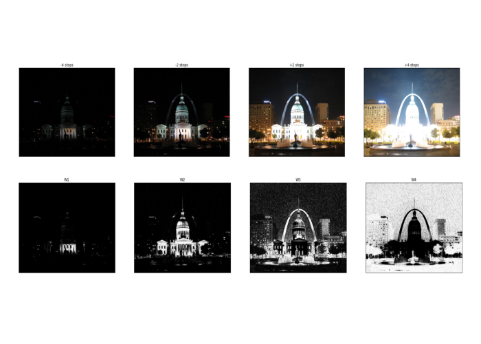
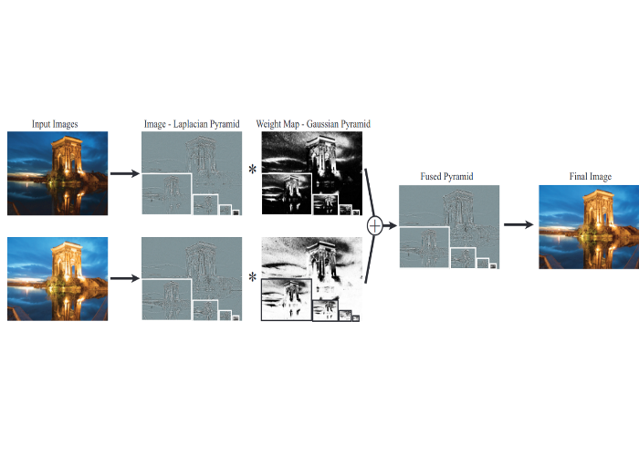
|
Exposure Fusion for HDR Imaging
Souhaiel BenSalem Academic Project code / report / slides Implemented the Exposure Fusion technique, eliminating the need for physically-based HDR assembly. Achieved image quality comparable to traditional tone mapping operators. |
|
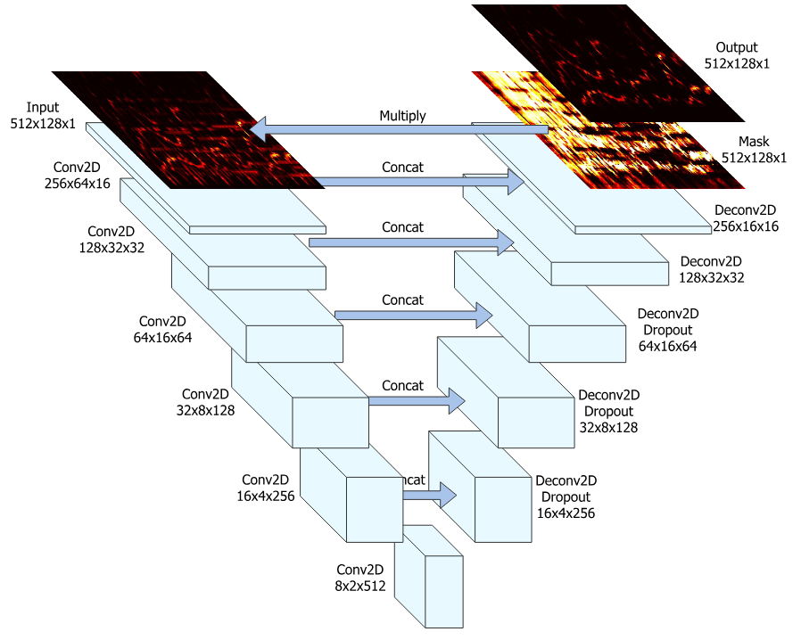
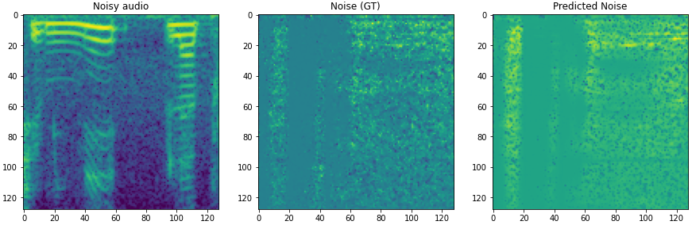
|
Audio Denoising U-Net
Souhaiel BenSalem Academic Project code Designed and trained a U-Net model for advanced audio denoising tasks. Leveraged predicted noise magnitude spectrograms for noise separation and used inverse Short-Time Fourier Transform (STFT) for accurate original audio reconstruction. |
|
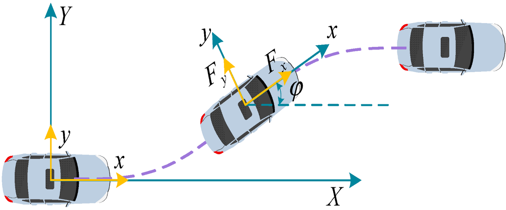
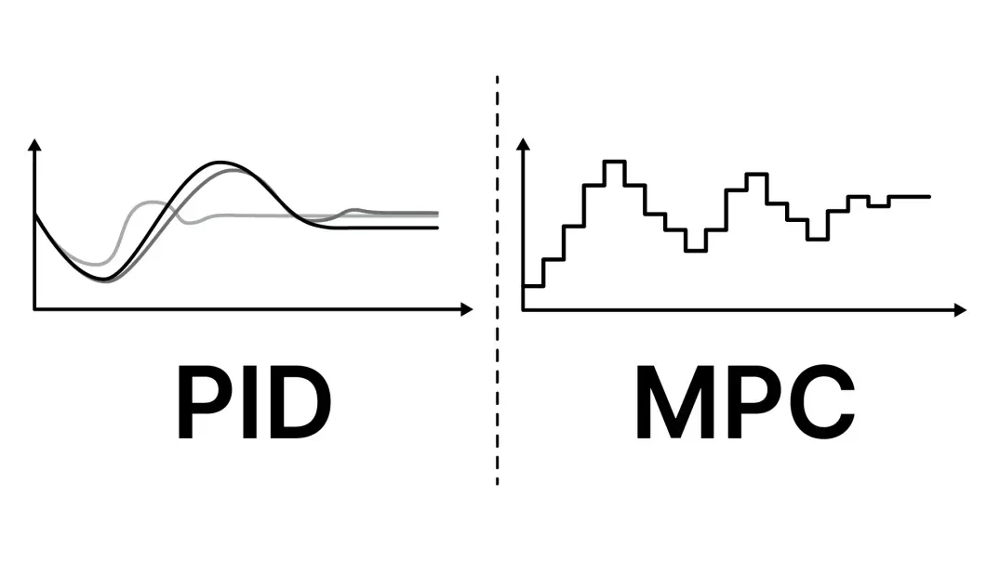
|
Longitudinal and Lateral Control of an Automotive Vehicle
Souhaiel Ben Salem Academic Project code / report Implemented a control strategy for a vehicle based on the Bicycle-Model, focusing on both lateral and longitudinal dynamics. Integrated Model Predictive Control (MPC) for automated steering and a PI controller for longitudinal speed tracking. Unified both strategies and validated performance using simulations with the Pure Pursuit algorithm. |

|
Violence Detection
Souhaiel Ben Salem Personal Project code Transfer learning for violence detection using a CNN-LSTM-based model. |

|
Deep Learning on ARM-based MCUs
Souhaiel Ben Salem Personal Project code Deployed the MNIST handwritten digit recognition model on the STM32F429 DISCOVERY board, showcasing deep learning on ARM-based microcontrollers. |
Blog Posts |
| 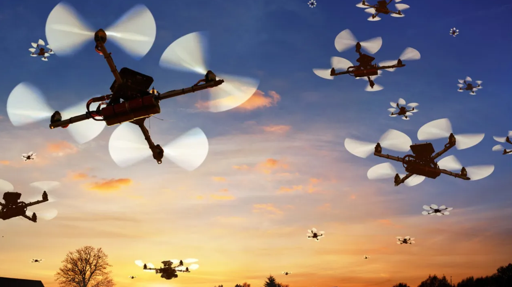 | Introduction to Cooperative Autonomous Multi-Robot Systems |
MiscellaneaI am passionate about reading (research papers included), reverse-engineering, (discussing) anthropology, and game theory. Fun Fact: Me and Luke Skywalker share the same hometown! Tozeur, a city in southern Tunisia, where Star Wars: A New Hope brought Planet Tatooine to life, and where iconic scene where Luke stood gazing at the binary sunset was filmed. A scene that symbolizes the closing of one chapter and the dawning of another .. and of cource, a new hope. |
| 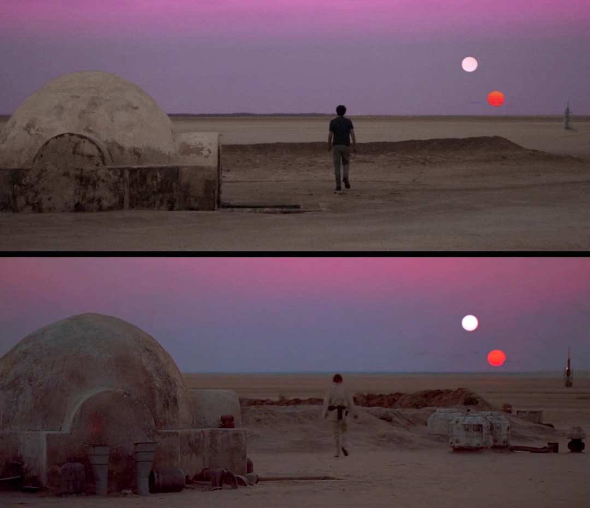 |
Visitors |
|
Website template inspired by Jon Barron. |